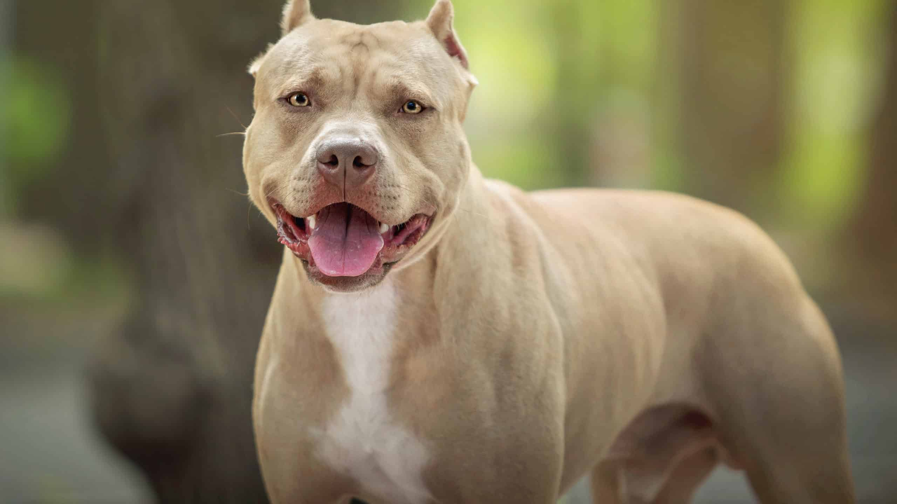

The Pit Bull is a medium-sized dog breed known for its strength, loyalty, and affectionate nature. Despite common misconceptions, Pit Bulls are often gentle and loving companions when properly trained and socialized.
